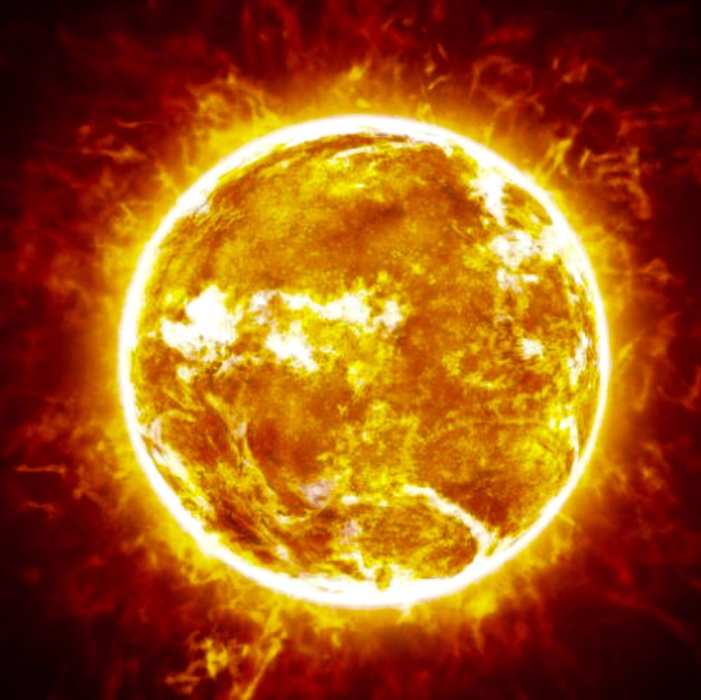

The Sun
The Sun is the star at the center of our solar system, a massive ball of burning plasma that provides heat, light, and energy essential for life on Earth.
- Type: G-type main-sequence star
- Diameter: ~1,391,000 km
- Mass: ~1.989 × 1030 kg (99.8% of Solar System)
- Surface Temperature: ~5,500 °C
- Core Temperature: ~15 million °C
- Age: ~4.6 billion years
Quick Facts
The Sun’s gravity holds the solar system together. Its energy is produced by nuclear fusion, converting hydrogen into helium. Sunspots and solar flares can impact space weather and Earth's magnetic field.